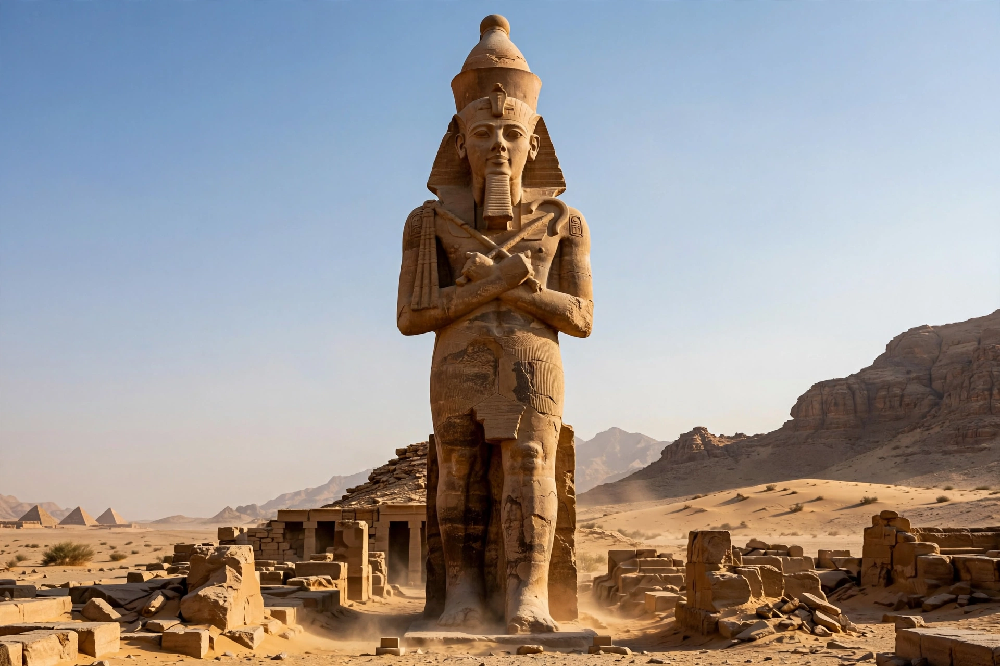

Akhenaten
Akhenaten (reigned c. 1353–1336 BC), known before the fifth year of his reign as Amenhotep IV, was an ancient Egyptian pharaoh of the Eighteenth Dynasty. He is renowned for abandoning Egypt's traditional polytheism and introducing Atenism, a religion centred on the sun disc Aten — an experiment often described as one of the earliest instances of monotheism or henotheism.

| Reign | c. 1353–1336 BC (18th Dynasty) |
|---|---|
| Predecessor | Amenhotep III |
| Successor | Smenkhkare / Neferneferuaten |
| Consort | Nefertiti |
| Father | Amenhotep III |
| Mother | Tiye |
| Burial | Royal Tomb of Akhenaten, later KV55 |
Reign and religious revolution
Early in his reign Akhenaten elevated the Aten above Egypt's other gods and, around year five, changed his name from Amenhotep ("Amun is satisfied") to Akhenaten ("Effective for the Aten"). He founded a new capital, Akhetaten (modern Amarna), and dedicated temples open to the sunlight. Later he proscribed the cult of Amun, closing temples and erasing the god's name. His Great Hymn to the Aten celebrates the sun disc as sole creator.
Art and family
Amarna art broke with convention, depicting the king with elongated skull, full lips, and a protruding belly, and showing intimate scenes with his chief wife Nefertiti and their six daughters. His successors included Smenkhkare, Neferneferuaten, and Tutankhaten — renamed Tutankhamun when the old religion was restored.
Aftermath
After Akhenaten's death his monuments were dismantled, his city abandoned, and later king lists omitted him and his immediate successors entirely. The mummy from tomb KV55 is widely believed to be his, and DNA testing identified it as the father of Tutankhamun.
See also
Amarna Period · Nefertiti · Aten · Tutankhamun